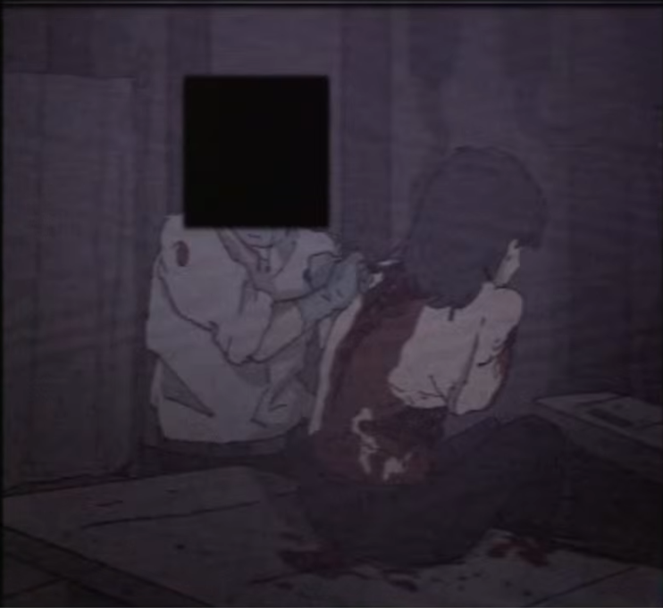
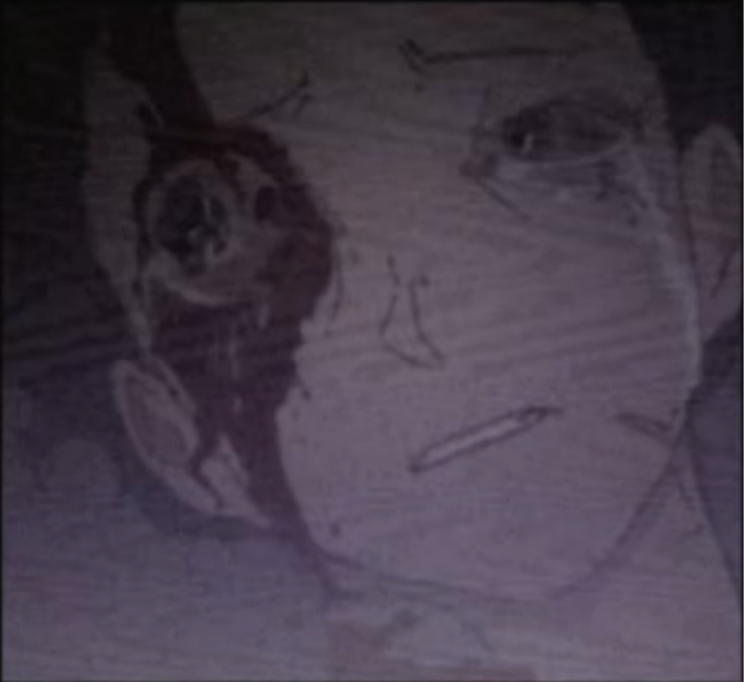

종교
타락교·혈교 및 타락 과정 기록은 내부 기록면 버튼으로 세부 열람한다.
타락교
타락교
Corrupted Cult
타락교는 암흑기에 흩어진 종파들이 이어져 형성된 오염 신앙 계열로 추정된다. 역대 지도층은 확인되지 않았으며, 현대에는 여러 국가에 침투해 사회 내부를 잠식한다.
저주와 신체 변형을 축복으로 받아들이고, 불멸성을 신앙의 증거로 삼는다. 개별 신자 하나하나가 실질적 위협이 되며 일반 사회 내부에 비밀 조직 형태로 남아 있다.

신원불명의 신자
Unidentified Believer
신원불명의 신자는 현장에서 가장 흔히 확인되는 타락교 하위 신자 유형이다. 겉으로는 인간과 비슷하지만 신체 내부와 행동 패턴은 이미 오염 단계에 들어간 경우가 많다.
신선한 살을 섭취한 뒤 일시적으로 형태가 안정되는 사례가 보고되었다. 소규모 집단 행동과 은밀한 접근을 우선 경계해야 한다.

가면을 쓴 존재
Masked Entity
가면을 쓴 존재는 타락교 의식장 주변에서 반복적으로 포착되는 특수 개체다. 야생 동물 기반 변형체로 추정되며, 일부 신자들은 이를 성물처럼 보호한다.
직접 교전보다 정신 오염과 추적 실패가 먼저 발생한다. 의식장 중심부에서 발견될 경우 즉시 봉쇄 등급을 올려야 한다.

타락의 과정 및 형태
Corruption Process
살의 길을 반복적으로 사용하면 늦거나 빠르게 침묵성 타락이 시작된다. 몸 곳곳에 새로운 기관과 형성물이 자라나며, 날카로운 치아를 가진 구강 구조와 감각 기관이 동반되는 경우가 많다.
이 과정은 비현실감과 인격 소실을 함께 일으킨다. 심한 경우 피해자는 자신의 신체를 먹어 치우는 자가포식 단계로 넘어간다.
자가포식으로 이어질 수 있음

침묵성 타락
Silent Corruption
침묵성 타락은 빙의 없이 피해자 내부에서 오염이 자라나는 사례를 뜻한다. 초기에는 정상 상태처럼 보이지만, 통증과 무기력, 이상 조직 성장이 뒤늦게 드러난다.
학교와 주거지 내부 사례가 증가하고 있다. 발견이 늦을수록 회복 가능성은 급격히 낮아진다.

융합성 타락
Hybridized Corruption
일반적인 타락은 대개 되돌릴 수 없으며 피해자를 타락 생명체로 전환한다. 그러나 일부 교단은 의식을 통해 타락을 피해자 내부에 통합시키는 융합 과정을 강제로 유도한다.
인간 자아와 타락 조직이 동시에 남아 있을 수 있다. 외형 일부만 변형되어 발견이 늦어지는 경우가 많다.
일부 기록은 정상적인 설명문처럼 시작하다가 교단식 안내문으로 순간 변조된다. 이 유형은 정보 오염 또는 의식성 간섭 흔적으로 분류한다.
당신의 행동에 책임을 지십시오

혈교
혈교
Blood Cult
혈교는 오래된 혈액 의식 전통에서 갈라져 나온 분파이며, 타락체 자체보다 피의 의미와 경로를 중시한다.
피를 생명 유지 물질이 아니라 문, 무기, 경로, 저장소를 여는 매개체로 취급한다. 피의 길 자체가 즉시 타락을 유발하지는 않지만, 과도한 사용은 대량 출혈과 탈수로 이어진다.

혈액 이동 경로 조정
Blood Route Control
혈액 사용자들은 체내와 외부 혈액의 이동 경로를 조정해 전투 흐름을 바꾼다. 출혈 제어와 응고 조작이 동시에 가능하며, 방어막과 즉석 무기 형성에 응용된다.
장기전일수록 사용자 체력 소모가 커진다. 혈액 손실이 누적되면 조작 정확도가 떨어지고 급성 탈수 증상이 뒤따른다.

혈무의 제작 과정
혈무 Creation
혈무는 기존 근접 무기에 혈액을 덮고, 피의 의식으로 고정해 만든 의식성 병기다.
완성된 혈무는 일반 무기보다 오래 버티며, 타락 조직을 절단하고 재생을 늦추는 데 사용된다.

피의 호수를 거니는 자들
Walking Through the Lake of Blood
혈액 웅덩이는 저장소이자 이동 경로로 사용된다. 혈교 신자는 수면 아래에 숨어 이동하거나 매복할 수 있다.
현장 인원은 이를 단순 혈흔으로 판단해서는 안 된다. 접근 전 고열 장비와 밀폐 회수 절차를 준비해야 한다.

혈액 저장소
Blood Reservoir
대량의 혈액이 내부에 저장되어 있으며, 혈교 사용자들은 이를 전투 중 회복 수단이나 의식 보급원으로 사용한다.
직접 접촉은 금지된다. 개봉 전 오염 수치 확인과 밀폐 반출 절차가 필요하다.

제압된 타락체
Suppressed Corrupted Entity
혈무와 화염을 병행한 제압은 타락체의 재생과 변형을 억제하는 데 효과적이다.
절단 후 즉시 소각하거나 혈액 경로를 봉쇄해야 재생 반응을 안정적으로 차단할 수 있다. 봉인구와 회수 절차는 반드시 병행한다.

타락교와 혈교 비교
비교 기록
- 타락교는 정신·육체 오염과 불멸성 숭배에 무게를 둔다.
- 혈교는 피의 길, 혈액 매개술, 저장소 운용에 무게를 둔다.
- 타락교의 핵심 위협은 잠복 오염과 개체화다.
- 혈교의 핵심 위협은 혈액 무기화와 경로 조작이다.
- 두 계열 모두 우시노다교 통합 위협 안에서 관리된다.
현장 대응 경고
작전 지침
인간 외형 유지 여부와 상관없이 타락교 신자는 잠재 위협으로 간주한다. 혈교가 남긴 혈액 웅덩이와 저장소는 이동 경로, 덫, 공격 수단으로 동시에 기능할 수 있다.
- 단독 접근 금지
- N.H.C 또는 S.I.D 동행 필수
- 의식장 발견 시 현장 봉쇄 우선
- 회수 절차는 봉인 인원 승인 후 진행